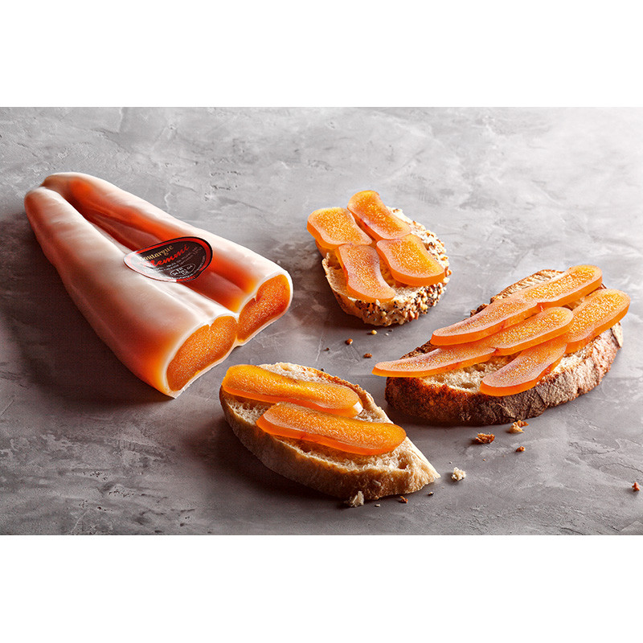
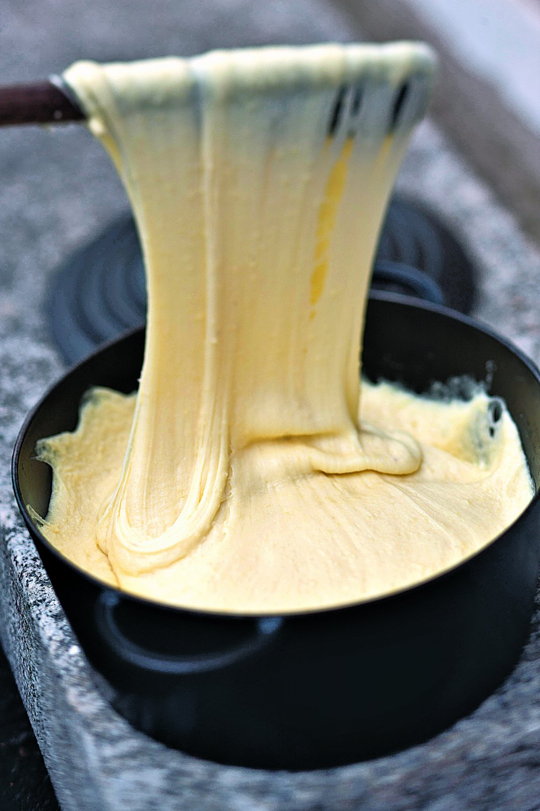
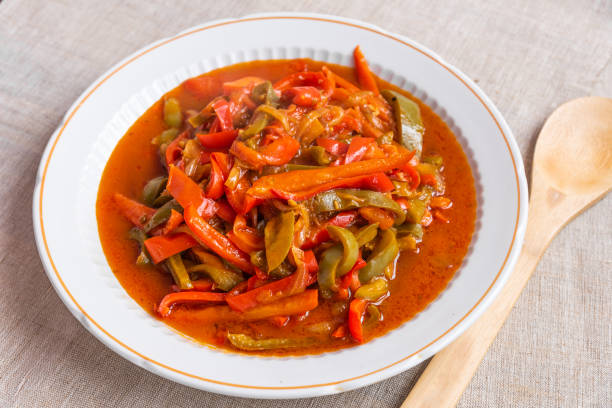
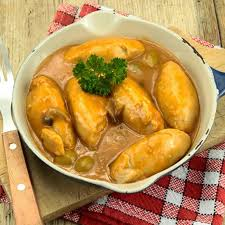

Découvre les spécialités régionales :

Poutargue
Spécialité méditerranéenne constituée d'œufs de mulet salés et séchés, souvent appelée "caviar de la Méditerranée".

Aligot
Plat traditionnel de l'Aubrac, mélange onctueux de purée de pommes de terre et de tome fraîche, donnant une texture filante.

Kig ha farz
Spécialité bretonne proche d’un pot-au-feu, accompagnée d’une pâte de sarrasin cuite dans un sac et servie avec des légumes.

Piperade
Plat basque à base de tomates, poivrons, oignons et piment d’Espelette, souvent accompagné d’œufs ou de jambon de Bayonne.

Quenelle de brochet
Spécialité lyonnaise à base de poisson mixé, servie avec une sauce Nantua à base de beurre d’écrevisse.